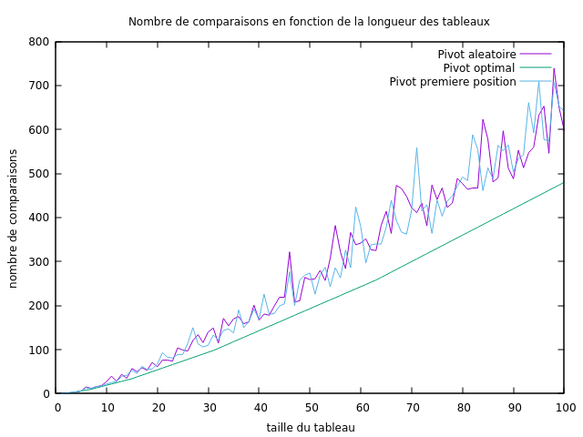

Quicksort¶
Réponses aux questions¶
1. Rappels sur le tri Rapide :¶
Réponses aux questions concernant la Rappels sur le tri rapide.
Question 1 :¶
Tri par insertion
Tri par sélection
Tri bulle
Question 3 :¶
Après la partition les élément qui se trouvent avant le pivot sont tous inférieurs à ce dernier, le reste des éléments qui se trouvent après le pivot sont tous supérieurs ou égales à ce dernier.
Question 2,4,5,6,7,8 :¶
Dans sorting.py
Question 9 :¶
L’espace mémoire supplémentaire utilisé lors d’un tri rapide d’un tableau de longeur n est : 2*log2(n) à chaque appel récursif on a deux dictionnaires qui sont générer et puis l’un des deux qui sera traité.
2. Sélection du pivot :¶
Question 1¶
Le meilleur des cas correspond à celui où à chaque appel récursif, le pivot choisi sépare la liste en deux listes d’égales longueur (à un près), dans ce cas le pivot est la médian du tableau.
Question 2,3 :¶
Dans sorting.py
Question 4¶

Question 5¶
- Dans ce cas, les équations de récurrence est:
c(n)=0 si n≤1
c(n) = c(⌊n−1/2⌋) + c(⌈n−1/2⌉) + n−1 ∀ n≥2.